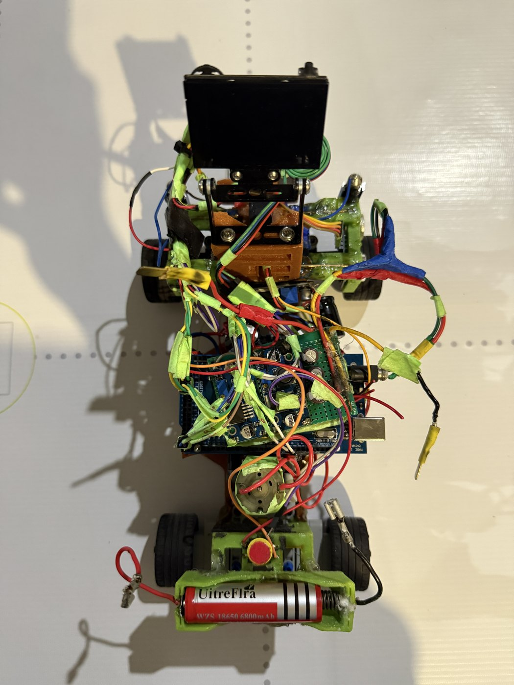
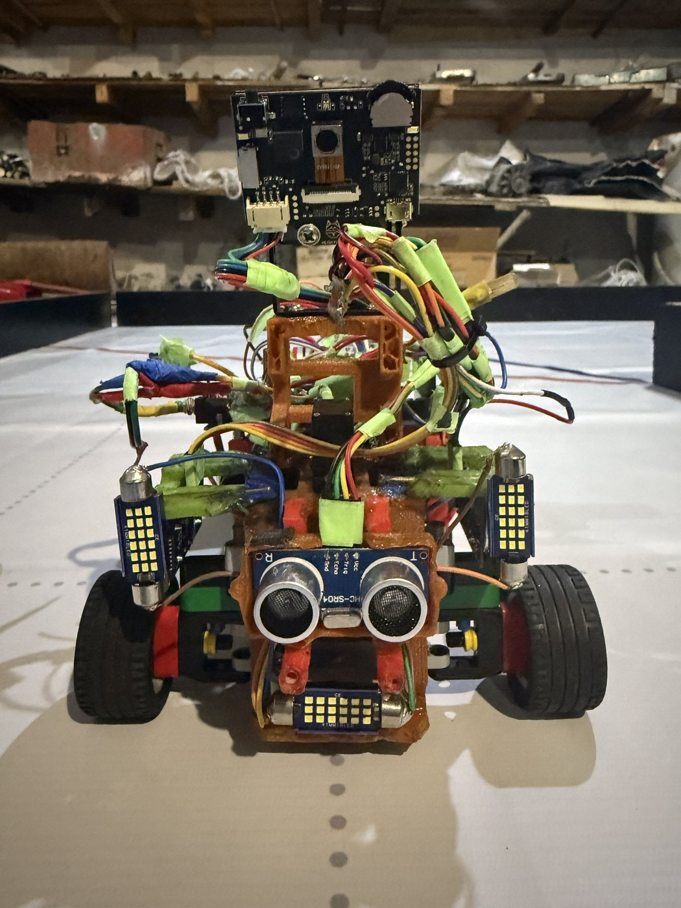

portfolio · EM/2026AI, Autonomy & Systems Engineeringissued · Nov 2026
Selected Work · 2021 — 2026
Elnur Mammadov
Computer engineering student building autonomous robots,
machine learning systems and low-level
software — from TEKNOFEST 2026 and WRO podiums to Kaggle
leaderboards, Windows telemetry tools, and a national operating system HAL.
I build real systems — from a PID-controlled self-driving robot
that placed 3rd at the World Robot Olympiad and a real-time
sign-language AI that placed 3rd at TEKNOFEST 2026,
to 1st-place Kaggle solutions and the HAL of AzerOS.
3rd
TEKNOFEST ’26 & WRO NSosyal, UAV & Future Eng.
1st
Kaggle ML3 Series Housing, Plants · Top-2 TED
100%
Holberton ML 1st & only QU recipient
20+
Awards earned national & international
I'm a third-year Computer Engineering student at Qarabağ
University (Fall-3 GPA 97.40/100), with six
years of competition and systems engineering across robotics,
autonomy, ML and low-level software. My work spans browser-side ONNX
neural models, Embedded Controller reverse engineering, and closed-loop
control on physical hardware.
I lead teams. I built and led team QU 1 to qualify
for the ICPC Northern Eurasia Finals (Honorable
Mention). I serve as HAL Team Lead & Systems Software
Engineer on AzerOS alongside 30+ engineers, and represent QU
across TEKNOFEST, Turkic World UAV, and combat robotics.
This portfolio documents eight engineering tracks —
each backed by verifiable hardware builds, deployed models, or shipped
open-source repositories.
→
Identity
NameElnur Mammadov
Born4 September 2006 · Baku
EducationB.Sc. Computer Engineering Qarabağ University · 2024 — 2028
TrackHolberton ML · 100% scholarship Nov 2025 — present
LanguagesAzerbaijani (native) Turkish & English (professional) Russian (beginner)
Eight verified engineering tracks across autonomous vehicles, real-time
sign-language AI, national OS hardware abstraction, ML competitions,
robotics, low-level Rust/C tooling, and ICPC algorithms.
05Sign Language Recognition — LSTM vs TransformersPublished ISLR research & AI position paper · Qarabağ University Conference 20261 page · p 10
06Combat & Aerial Robotics — Technoxian 15kg & Turkic World UAV3rd at BotsCombat 15 kg (AZ) · 3rd at Turkic World UAV Competition (Gebze, Türkiye)1 page · p 11
08Competitive Programming — ICPC NEERC & HonorsHonorable Mention · team QU 1 · Qarabağ University · full competition timeline (2018–2026)1 page · p 13
How to read this document
Each page leads with the system, problem, architecture and measured outcome.
Live repository, PyPI, web demo and video links appear at the bottom of each case.
Team NEDrobotics (3 members) designed, built and programmed
a fully autonomous vehicle for the WRO Future Engineers category — a robot
that drives a track on its own, detects coloured traffic signs, follows
walls, executes turns and parks, all from a single Arduino Mega using a
closed-loop PID wall-following stack and a vision module
for sign recognition.
FIG 1.1 · Physical Build & Top Layout

top · Mega + 18650 split rail

front · HuskyLens + 3× US + LED
→
Problem
Drive autonomously around a rectangular track, detect coloured
traffic signs, handle obstacles and corners, execute three full laps,
then park — without human input.
→
Approach
Closed-loop PID wall-following on side ultrasonics,
HuskyLens for colour-tag recognition, and a top-level
state machine that handles parking, turning and lap
counting.
→
Outcome
3rd place at the VIII Republic Robot
Olympiad (national WRO stage), repeatable runs, fully open-source
documentation — schematics, BOM, code and pseudo-code published.
The robot maintains a set distance from the active wall using a
classic PID loop on smoothed ultrasonic readings. EMA filtering
(α = 0.4) suppresses sensor noise; the integral term is clamped to
prevent windup; output is clamped to a maximum steering correction
in degrees so the geometry stays sane.
Forward PWM is automatically scaled down by |Δ| — the
robot slows during aggressive corrections, which is what kept us on
the line through tight turns.
# PID — wall following
error = target_d − measured_d # active side US
integral = clamp(integral + error·dt, I_MIN, I_MAX)
derivative = (error − last_error) / dt
out = Kp·error + Ki·integral + Kd·derivative
out = clamp(out, ±MAX_CORRECTION_DEG)
# Steering — sign-flipped for right-wall mode
servo_pos = s_mid + (out · (−1 if mode==RIGHT else +1))
# Speed — slow under heavy steering
speed = max(MIN_SPEED, BASE_SPEED − k·|out|)
DETERMINE DIRECTION — pick CW / CCW from initial geometry
EXIT PARKING LOT
LAP × 3
read traffic-sign colour from HuskyLens
turn left / right + follow corresponding wall
read next sign · execute corner turn
PARK — front-US driven alignment
FINISH — final offset + stop
Why this matters for autonomy
The same shape — filter → estimator → bounded controller →
actuator, wrapped in a top-level state machine — scales
directly to UAVs, ground vehicles and any closed-loop autonomous
platform. Same equations, different sensors.
The interesting engineering happens between v1 and v3. A short log of
the calls we made and why:
TCS3200 colour sensor → HuskyLens. The TCS3200's RGB readings drifted under the venue lights; we replaced it with HuskyLens for higher-level colour-tag recognition.
Ultrasonics: side-firing → front-mounted. Side angle caused the wall to read "far" because of the beam tilt; the robot would creep into the wall. Repositioning + adding the PID loop fixed it.
HuskyLens firmware bumped to v0.5.1b-Norm for fewer false colour reads.
Drive: AWD → RWD. Less wheel scrub, more stable cornering, more usable torque.
Front LED bar added. The camera was under-exposing tag colours under venue lighting; three high-output LEDs solved it.
Power: single rail → split rails + capacitors. Motor inrush was browning out the MCU; separating the motor and logic supplies — and adding 3 bulk caps for current spikes — eliminated random Arduino resets.
Engineering note
“Engineering is not about creating something with unlimited resources
— it's about creating wonders with the resources you
have.” — full BOM came in at $74.7.
project · 02 / Chevir · TEKNOFEST 2026Real-Time Sign Language AI · Browser WASMpage 07 / 14
Project 02 2026 — present
Chevir AzSL Two-way Azerbaijani Sign Language AI platform
Result
3rd place — TEKNOFEST ’26
Top-3 viewed · Baku ID ’26
Role
ML Engineer · Team Chevir
Deep LearningPyTorch · ONNX WASMDepthwise Conv1D + ECA + TransformerMediaPipe · 3D VRM IK🥉 TEKNOFEST NSosyal 2026
Chevir is a bidirectional Azerbaijani Sign Language
(AzSL) platform running zero-server browser inference
via onnxruntime-web. I architected the end-to-end ml/azsl/
training and export stack across 43.9 GB of byte-range extracted AzSLD
video, shipping continuous signing, 756-word open-set recognition, and a
3,173-sign Azerbaijani NLP-to-3D avatar synthesis engine.
2.1
ML Pipeline & Architecture Owned
Streaming Continuous AzSL (SeqNet): Depthwise separable Conv1D + ECA + Transformer (1.7M params), 96-frame window, stride 8, 24-frame lookahead — achieving 0.927 F1 / 0.105 WER on unseen AzSLD test signers.
Open-Set & Fingerspelling: Trained across 10,189 frontal + 9,571 side sentence clips, 8,557 Words-200 clips, and 7,359 fingerspelling samples (0.933 top-1 fingerspelling; 0.903 merged macro-F1 across 756 signs).
Text-to-3D Avatar (VRM): Built a 3,173-sign Azerbaijani NLP lookup + two-bone IK solver cutting orientation error from 67.8° to 0.8° (0.890 same-gloss F1).
Parity & Regression CI: JavaScript feature-extraction twin tested to 4.3×10−6 logit parity against PyTorch, enforced on every PR by ci_gates.mjs.
2.2
Measured Benchmarks
Continuous F1 / WER0.927 F1 · 0.105 WER
Open-Set (756 words)0.903 merged macro-F1
Fingerspelling0.933 top-1 accuracy
VRM IK Solver67.8° → 0.8° error
Model Size1.7M params · client WASM
PyTorch ↔ JS Parity4.3e-6 max logit diff
Award (Oct 2026)🥉 3rd · TEKNOFEST NSosyal
Deployment Model
All MediaPipe landmark extraction and ONNX Transformer inference executes
locally inside the user's browser — zero GPU server cost, low latency,
and full privacy.
AzerOS is Azerbaijan's national operating system — a
Debian GNU/Linux–based platform led by Qarabağ University under
Dr. Hüsrev Kastacı, developed by 30+ engineers across kernel
development, system security and hardware abstraction. Its mission is
digital sovereignty: a state-grade OS for government, critical
infrastructure, education and the corporate sector.
3.1
Role — HAL Team Lead & Systems Eng.
I serve as HAL Team Lead & Systems Software Engineer —
owning the surface between AzerOS userspace and the physical hardware
underneath. The HAL is what lets the same OS image run on heterogeneous
machines without the upper stack knowing or caring.
Day to day this spans driver glue, device-tree handling, kernel-module
integration, hardware-detection paths and the ABI contracts that the
rest of the system uses to talk to silicon.
Why a national OS
Every line is auditable, every process accountable. Zero
dependence on opaque foreign software means no hidden
telemetry and full control over critical-infrastructure systems.
Three cohort-internal Kaggle Community competitions run by Holberton School
Baku as part of the Machine Learning track — testing feature engineering,
cross-validation discipline, and generalizing cleanly onto unseen test splits.
4.1
HLBT Housing Prices & HLBN Plants
HLBT Baku ML3 Housing🥇 1st place (MAE)
HLBN Plants Competition🥇 1st place
Housing TargetSalePrice regression (Feb—Mar ’26)
ValidationStratified / K-Fold CV
Approach
Domain interaction features, target-aware encodings, log-transformed
targets for skew stabilization, gradient-boosted ensembles (XGBoost /
LightGBM) validated under strict out-of-fold CV, plus tail residual
error analysis to protect MAE.
project · 05 / ResearchLSTM vs Transformers — Sign Language Recognitionpage 10 / 14
Project 05 April 2026
Sign Language Recognition
Type
Original research paper
Qarabağ U. · "Engineer of the Future" I
Role
Author
Deep LearningLSTMTransformersISLRSignal ProcessingPublished · Apr 2026
A comparative analysis of LSTM and Transformer
architectures for Isolated Sign Language Recognition (ISLR) — a
sequence-classification problem on body-keypoint time series presented at
Qarabağ University in April 2026, directly informing our production AzSL
pipeline in Chevir.
5.1
The question
Sign language is a spatio-temporal signal: the same
hands and body, encoded over time, produce structured sequences. The
paper asks a clean question — for ISLR specifically, do attention-based
Transformer encoders actually beat the recurrent baselines they
replaced in NLP, or does the inductive bias of recurrence still win
on shorter, well-bounded gesture sequences?
5.2
Why this is autonomy-relevant
The same sequence-modelling toolkit — recurrent vs attention,
windowed input, classification head — is the toolkit for
signal processing on sensor streams: IMU traces,
telemetry, intent prediction, anomaly detection. The architectures
transfer almost verbatim from gesture frames to flight data.
5.3
Paper
TitleA Comparative Analysis of LSTM and Transformers for Sign Language Recognition
Venue"Engineer of the Future" I Scientific-Technical Student Conference
HostQarabağ University
DateApril 2026
FormatConference paper · presented
5.4
Companion paper
Same conference: a position paper on
"Transformation of Programming in the Age of AI" —
how AI is reshaping software development practice, IT education and
the developer role itself.
From Paper to Production
Insights from the April 2026 ISLR comparison carried directly into
Chevir's hybrid depthwise Conv1D + Transformer ONNX architecture,
contributing to Team Chevir's 3rd place at TEKNOFEST 2026.
FIG 4.1 · Architecture comparison
Project 05 · Sign Language Recognition · LSTM vs Transformers10 / 14
Leading hardware teams across harsh physical envelopes — from
Technoxian BotsCombat 15kg in Baku to the international
Turkic World UAV Competition hosted at Gebze Technical
University with the Organization of Turkic States (May 2026). Both force
hard trade-offs across mass budget, power routing, fail-safes and field triage.
6.1
What I owned — BotsCombat 15kg
Chassis & armour — geometry, mass distribution, weak-point hardening
Drivetrain — motor & ESC selection within the 15 kg envelope
Electronics — power routing, fail-safes, radio link
Match strategy — pre-fight reconnaissance & in-fight calls
Team coordination — rapid repair triage between bouts
Graceful Degradation
Both combat platforms and aerial systems operate where single failures
cascade fast. Engineering under combat and field constraints builds
discipline around clean wiring, fail-safes, and rapid fault isolation.
6.2
Podium Competitions
Turkic World UAV🥉 3rd place (May 2026)
OrganizerGebze Tech · Org. of Turkic States
BotsCombat 15 kg🥉 3rd place (Jun 2025)
University TeamQarabağ University
6.3
Prior robotics track
FIRST LEGO League 2022/23 — 1st place · Robot Design (national)
STEAM Azerbaijan 2022 — bronze medal (Ministry of Education)
IV Azerbaijan Robot Olympiad — 3rd place · Junior Advanced
Eurasian Skills Competition 2022 — silver medal
FIG 6.1 · BotsCombat 15kg · top-view profile
Project 06 · Combat & UAV Robotics11 / 14
project · 07 / Systems ToolingOpen Source · Rust · C · Pythonpage 12 / 14
Project 07 Open Source
Systems & Tools Kernel telemetry, Embedded Controller I/O & AI sims
Stack
Rust · C17 · Win32 HID · Python
CI / Release
GitHub Actions · PyPI · Scoop
Systems SoftwareRust · LOF-kNNITE IT5570E ECWin32 HIDSQLite WALAll CI Passing
Beyond competition builds, I write compact systems utilities in
Rust and C and publish interactive AI simulations —
combining hardware register work, OS telemetry, anomaly detection, and
clean packaging with automated CI.
Adaptive LOF-kNN anomaly detector & Windows forensic process/network monitor with live TUI, ETW & WMI event telemetry, and persistence backed by SQLite WAL mode. Verified by continuous integration on GitHub Actions.
Reverse-engineered register map for the ITE IT5570E Embedded Controller on Predator PHN16-71 hardware, exposing cross-platform Linux and Windows CLI control for thermal profiles and LED state.
Zero-dependency native Windows system-tray daemon and CLI querying Keychron keyboard battery percentages over raw USB/Bluetooth HID feature reports, packaged as a Scoop manifest.
Complete rule-accurate Turkish Mangala strategy engine and AI opponent, published to PyPI as mangala-game with an interactive static web frontend deployed on GitHub Pages.
Interactive Hopfield neural network energy-landscape and local-search simulator visualizing attractor basins, asynchronous state convergence, and spurious memory states.
Formed and led team QU 1 from the first semester at
Qarabağ University. Through the ICPC Azerbaijan Regional
Camp (Aug 2025) and the Sumgayit Cup we trained, qualified and made the
ICPC Northern Eurasia Finals, earning Honorable Mention
— doubling the university's previous-year result.
8.1
Selected awards
Oct 2026
TEKNOFEST NSosyal İnovasyonTeam Chevir · Real-time AzSL AI
3rd place
May 2026
Turkic World UAV CompetitionGebze Tech · Org. of Turkic States
ICPC Northern Eurasia Finals 2025QU 1 · December 15–17
honorable mention
Sep 2025
VIII Republic Robot Olympiad — Future Eng.National stage of WRO · Baku
3rd place
Jun 2025
Technoxian — BotsCombat 15kgAzerbaijan stage · Qarabağ University
3rd place
Apr 2025
Sumgayit Cup — Inter-University ContestFirst nationwide cup · team result
3rd place
May 2024
“IT sahəsindəki yolum” — Web Programming
awarded
Apr 2023
FIRST LEGO League 2022 / 23 — Robot Design
1st place
May 2018
I Lutfi Zadeh Logic OlympiadMinistry of Education of Azerbaijan
1st place
8.2
How the team was built
Qarabağ University didn't have a competitive programming pipeline
when I arrived — I helped build one. From semester one I formed
training pairs, organised weekly contest rounds, and mentored
incoming teammates on STL, DP and graph theory.
We used the ICPC Azerbaijan Regional Camp as a
forcing function — a train-and-compete format with live rounds — and
the Sumgayit Cup as the qualifier path. Result: QU 1's
Honorable Mention at NEERC Finals, a step up from
where the university had been the year before.
Real autonomy code is built on top of algorithms that work.
ICPC training builds bounded search, exact geometry and tight
complexity discipline inside every path planner and signal pipeline.
I build at the intersection of AI, autonomy and systems
engineering — where real-time ML, low-level HAL, and physical
hardware meet. This document is the case for that work.